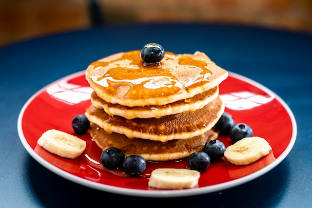

Любимые Блины Одина

Главное блюдо Одина на завтраке!
После его победы на варагами
- Мука мидгарда
- Кора Иггдрасиля
- Специи муфельхейма
- Вода из источника Асгарда
Шаги Приготовления!
- Замешать тесто с шипоткой Иггдрасиля
- Готовить на молоте Тора
- Украсить Пламенем Суртура
- Остудить в Йотунхейме
Главная